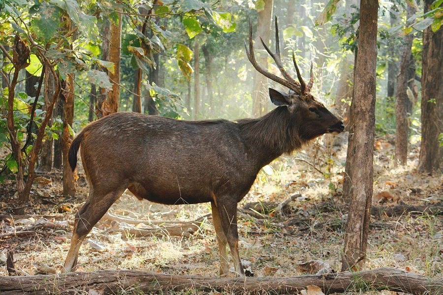

सांभरSambar
Rusa unicolor · Cervidae · MAM-0037

- Scientific name वैज्ञानिक नाम
- Rusa unicolor (Kerr, 1792)
- Family कुल
- Cervidae
- Hindi हिंदी
- सांभर
- Local names स्थानीय नाम
- sambar, samar, jarao, maha, sambar deer
- Status here यहाँ की स्थिति
- native
- Movement आवागमन
- Resident, here all year
- Known from कहाँ दर्ज
- Others have published records from the Basti–Ayodhya districts बस्ती–अयोध्या के ज़िलों से दूसरों के प्रकाशित अभिलेख
- IUCN IUCN
- VU
- Review समीक्षा
- not yet reviewed
When to look कब देखें
Present all year. साल भर मौजूद।
Tell it apart from इनसे अलग पहचानें
सांभर / Sambar
Rusa unicolor (Kerr, 1792) — Cervidae
सांभर — भारतीय उपमहाद्वीप का सबसे विशाल और भारी हिरण है, जो तराई के घने साल के जंगलों और तलहटी के ऊबड़-खाबड़ पहाड़ी नालों में निवास करता है। इसका शरीर एक मजबूत घोड़े जैसा भारी होता है और इसका रंग गहरा धूसर-भूरा या काला-कत्थई होता है जिस पर कोई सफेद चित्तियां नहीं होतीं। वयस्क नर के गले पर घने मोटे बालों की एक अयाल (गर्दन के बाल) होती है और सिर पर भारी, तीन शाखाओं वाले मजबूत सींग होते हैं। यह स्वभाव से अत्यंत सतर्क और निशाचर है, जो खतरे का आभास होते ही जंगल में तेज सीटी जैसी चेतावनी देता है।
Quick Identification त्वरित पहचान
| Feature | Description |
|---|---|
| Habit | Massive, secretive forest deer frequenting dense wooded hills and sal jungle |
| Pelage | Coarse, shaggy, uniform dark umber-brown to yellowish-brown, lacking white spots |
| Male Mane | Prominent erectile ruff of dense, coarse dark hair covering the neck and throat |
| Antlers | Massive, rugged, heavily pearled, three-tined antlers borne by adult stags |
| Ears | Exceptionally large, rounded, bat-like ears lined with pale whitish hairs inside |
| Tail | Moderately bushy, blackish above with pale yellowish-buff underside |
| Gland Marks | Enormous preorbital tear glands capable of being deeply everted during excitement |
Field tip: Scan dense sal nullahs and waterholes at dusk. The massive horse-like frame, uniform dark brown unspotted coat, enormous broad ears, and heavy three-tined antlers instantly identify the Sambar.
हिंदी:
यह बहुत बड़े आकार का भारी हिरण है जिसका रंग गहरा भूरा या मटमैला काला होता है।
इसके कान बहुत बड़े और गोल होते हैं तथा इसके शरीर पर कोई सफेद धब्बे नहीं होते।
नर के गले पर घने बाल (अयाल) होते हैं और सींग बहुत मोटे व तीन शाखाओं वाले होते हैं।
Morphology आकारिकी
Measurements as given by Blanford (1891 as Cervus unicolor):
| Measurement | Range |
|---|---|
| Length | 6 to 7 feet, tail 12 to 13 inches (Blanford 1891) |
The Sambar is the largest deer species native to the Indian subcontinent, displaying imposing physical power and rugged build. Adult stags possess thick, heavily rugose three-tined antlers mounted on short pedicels. The stout brow-tine joins the main beam at an acute angle, and the beam bifurcates at the summit into two heavy tines.
The hair is coarse, wiry, and relatively sparse compared to temperate cervids. Old stags are dark slaty-brown to nearly black, while hinds and younger animals are yellowish-brown or greyish-brown.
The neck and throat of mature males are clothed in an erectile mane of long coarse hair that stands erect when the animal is agitated. The tail is relatively short, bushy, and dark brown, with the underside pale buff.
The eyes are large with prominent, deep preorbital tear pits that can be turned inside-out during social displays. The hooves are sturdy and well suited for navigating rocky slopes and forest terrain.
Vocalisations. A remarkably loud, piercing, explosive alarm call resembling a metallic horn blast or loud resonant bark dhank, accompanied by foot stamping that sends shockwaves through the forest.
हिंदी:
इसकी लंबाई 6 से 7 फीट और पूंछ 12 से 13 इंच होती है।
नर हिरण का वजन बहुत अधिक होता है और इसके सींग बहुत भारी और मजबूत होते हैं।
यह खतरे के समय अत्यंत तेज और गूंजती हुई धाकदार आवाज निकालता है जिससे पूरा जंगल सतर्क हो जाता है।
Behaviour & Ecology व्यवहार और पारिस्थितिकी
Rusa unicolor is a shy, secretive, and predominantly nocturnal woodland dweller. During daylight hours, it beds down in deep, shaded ravines, dense bamboo brakes, or thick sal undergrowth, venturing out only after sunset to feed.
Unlike the gregarious spotted deer, Sambar are generally solitary or live in small family groups consisting of a hind and her calf, or small bachelor groups of young stags. They are exceptionally fond of water and mud, frequently wallowing in forest pools and muddy nullahs to cool their skin, deter biting flies, and plaster their shaggy coats with protective clay.
हिंदी:
यह दिन में घने जंगलों की ओट में छिपा रहता है और रात के समय भोजन के लिए निकलता है।
यह कीचड़ और पानी में लोटना बहुत पसंद करता है ताकि मक्खियों और गर्मी से बच सके।
Life Cycle / Phenology जीवन चक्र
Blanford (1891, p. 546) records that the rutting-season is about October and November in the Peninsula of India, but according to Hodgson, in spring in the Himalayas; at that season the loud roaring call of the stags is often heard.
A single young one is generally born at a time (Blanford 1891, p. 546). The horns are usually dropped in March in the Peninsula, and about April in the Himalayas (Blanford 1891, p. 546).
हिंदी:
ब्लैनफोर्ड (1891, पृ. 546) के अनुसार प्रायद्वीपीय भारत में मद का समय अक्टूबर और नवंबर के आसपास होता है, जबकि हिमालय में वसंत ऋतु में।
सामान्यतः एक बार में एक ही बच्चा पैदा होता है। सींग प्रायद्वीप में मार्च और हिमालय में अप्रैल के आसपास गिरते हैं।
Host Plants or Prey आहार
The Sambar is a versatile generalist herbivore that relies extensively on browse, supplemented with grasses and fallen forest produce:
- Foliage and tender twigs of Shorea robusta, Mallotus philippensis, and Ziziphus shrubs
- Bamboo shoots and leaves (Dendrocalamus strictus)
- Fallen flowers of Madhuca longifolia (mahua) and wild fruits of Emblica officinalis (amla)
- Aquatic vegetation, water lilies, and reeds dredged from forest pools
- Forest grasses grazed in glades and along firelines during nocturnal foraging
Its tall stature and strong neck allow it to stand up on its hind legs to reach browse branches situated well above the reach of smaller deer species.
हिंदी:
यह साल की कोपलें, रोहिणी, बांस के पत्ते, जंगली फल और महुआ के फूल खाता है।
यह पिछले पैरों पर खड़ा होकर ऊंचे पेड़ों की डालियों से भी पत्तियां तोड़ लेता है।
Predators / Natural Enemies शत्रु
The Tiger (Panthera tigris) and Leopard (Panthera pardus) are the principal natural enemies of the Sambar (Blanford 1891, p. 544).
हिंदी:
बाघ और तेंदुआ सांभर के मुख्य प्राकृतिक शिकारी हैं (ब्लैनफोर्ड 1891)।
Agricultural / Human Relevance कृषि प्रासंगिकता
The Sambar is an herbivorous browser and grazer, feeding on forest foliage, grasses, and fallen fruits (Blanford 1891, p. 543). It is protected under the Wildlife (Protection) Act, 1972.
हिंदी:
सांभर एक शाकाहारी हिरण है, जो जंगल की पत्तियों, घासों और गिरे हुए फलों को खाता है (ब्लैनफोर्ड 1891)। यह वन्यजीव (संरक्षण) अधिनियम, 1972 के तहत संरक्षित है।
Expected Locally स्थानीय रूप से अपेक्षित
Not a field record. Written from published accounts for eastern Uttar Pradesh. No confirmed local sighting yet — if you have seen it, that is what the atlas needs.
अभी तक स्थानीय पुष्टि नहीं। यह विवरण प्रकाशित स्रोतों से है, किसी अवलोकन से नहीं।
Look along deep sal ravines, shaded nullahs, and muddy wallows in reserved forests.
GBIF holds published records from these districts.
A first record would be a photograph of the animal with place and date, sent through the About page.
Distribution वितरण
Global range: Widespread across South Asia, southern China, and Southeast Asia to Sumatra and Borneo.
Regional status: Resident in dense sal forest tracts and foothill woodlands of northern Uttar Pradesh, including Dudhwa, Katarniaghat, and Sohelwa Wildlife Sanctuaries.
हिंदी:
यह भारत, नेपाल, श्रीलंका, चीन और दक्षिण-पूर्व एशिया के घने जंगलों में पाया जाता है।
Research Questions शोध प्रश्न
- How do seasonal browse-to-graze ratios in Rusa unicolor vary between the monsoon flush and the dry winter in the Terai? / तराई में बरसात और सर्दियों के बीच सांभर के भोजन में पत्तियों और घास का अनुपात कैसे बदलता है?
- What are the key microhabitat variables that determine wallow site selection by rutting stags in sal forests? / सर्दियों में नर सांभर कीचड़ में लोटने के लिए किन स्थानों को सबसे अधिक प्राथमिकता देते हैं?
- What is the impact of nocturnal crop foraging by sambar on agricultural boundaries surrounding reserved forest tracts?
- How do antler casting timelines compare between foothill populations and Gangetic alluvial populations?
- Can acoustic monitoring of loud alarm barks be deployed to track predator movements across protected core zones? (Sound recordings of sambar barks indicate the proximity of large carnivores.)
Similar Species मिलती-जुलती प्रजातियाँ
| Species | How to tell apart | हिंदी | |
|---|---|---|---|
| [[spotted_deer\ | Spotted Deer]] (Axis axis) | Much smaller size; bright golden-rufous coat with permanent white spots; slender build; gregarious open-glade habits | चित्रा / चीतल |
| [[swamp_deer\ | Swamp Deer]] (Rucervus duvaucelii) | Bright yellowish-brown or rufous coat; antlers have ten to twelve or more tines forming a crown; obligate swamp dweller | बारहसिंगा |
Field rule: The massive horse-like size, uniform shaggy dark umber-brown coat devoid of white spots, large bat-like ears, and heavy three-tined antlers distinguish the Sambar from all other deer.
हिंदी:
चीतल छोटा और सफेद चित्तियों वाला होता है; बारहसिंगा के सींग में कई शाखाएं होती हैं और वह दलदल में रहता है।
Taxonomy & Classification वर्गीकरण
Original description. Described by Robert Kerr in 1792 in The Animal Kingdom (p. 109), under the basionym Cervus unicolor. Formerly placed under Cervus unicolor by Blanford (1891).
Subspecies. Multiple subspecies are recognized across Asia; the Indian mainland form is Rusa unicolor unicolor (Kerr, 1792).
Family and order placement. Order Artiodactyla; family Cervidae (deer); subfamily Cervinae.
IUCN status rationale. Evaluated as Vulnerable (VU) by the IUCN Red List due to population declines driven by intensive poaching for meat and antlers, habitat fragmentation, and industrial deforestation across parts of Asia.
हिंदी:
केर ने 1792 में इसका वर्णन किया था। यह सर्व्हिडे कुल का सदस्य है और वैश्विक स्तर पर सुभेद्य (VU) घोषित है।
Photo Gallery फोटो गैलरी
No photos yet — add field photos to media/species/sambar/ and run node scripts/sync_photos.js.
Photos needed आवश्यक फोटो
- [ ] Adult stag with massive hard antlers standing in sal undergrowth (साल के जंगल में खड़ा बड़ा नर सांभर)
- [ ] Hind with calf drinking at forest pool (जंगल के ताल पर पानी पीती मादा और बच्चा)
References संदर्भ
- Kerr, R. (1792). The Animal Kingdom, or Zoological System of the Celebrated Sir Charles Linnaeus, Class I: Mammalia. J. Murray, London, p. 109 (as Cervus unicolor).
- Blanford, W. T. (1891). The Fauna of British India, Including Ceylon and Burma. Mammalia. Taylor & Francis, London, p. 543 (as Cervus unicolor).
- Lydekker, R. (1898). The Deer of All Lands. Rowland Ward, London, p. 143.
- Menon, V. (2014). Indian Mammals: A Field Guide. Hachette India, Gurgaon.
- Timmins, R. J. et al. (2015). Rusa unicolor. The IUCN Red List of Threatened Species 2015: e.T41790A22156247.
- GBIF Occurrence Data — Rusa unicolor (Kerr, 1792), India (2025).
Source file: species/fauna/mammals/sambar.md